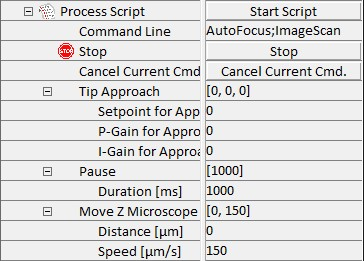

|
处理脚本
|
处理脚本参数组允许为自动执行多个连续任务定义基于脚本的命令行。可以包含在脚本中的每个任务都显示在此参数组中。在各自参数组中已完全定义的任务（如图像扫描或自动对焦）使用其各自参数组中设置的参数。这些任务仍将显示在处理脚本参数组中，但不带任何参数。一些额外的任务包含在处理脚本参数组中，其参数可在此处调整。表 1 显示了可用的任务及其参数。
表 1：可在处理脚本序列器中使用的任务。描述了新参数并标明了在其他参数组中定义的参数位置。
|
任务名称 |
命令行 |
参数 |
参数描述 |
|
暂停 |
pause |
持续时间 [ms] |
此时暂停的持续时间 |
|
显微镜 Z 轴移动 |
movezmicroscope |
距离 [µm] |
显微镜 Z 台应移动的距离（+ = 增大物镜-样品间距；- = 减小） |
|
速度 [µm/s] |
移动过程中显微镜 Z 台的速度 |
||
|
自动对焦 |
autofocus |
使用自动对焦中的参数。 |
|
|
探针逼近 |
tipapproach |
逼近设点值 |
用于逼近的反馈设点值 |
|
逼近 P 增益 |
逼近的反馈增益 |
||
|
逼近 I 增益 |
|||
|
单光谱 |
singlespectrum |
使用单光谱中的参数。 |
|
|
图像扫描 |
imagescan |
使用图像扫描中的参数。 |
|
|
保存项目 |
saveproject |
使用程序选项中的参数。 |
|
|
存储位置 |
storeposition |
存储当前扫描台位置 （仅限压电扫描器） |
|
|
转到位置 |
gotoposition |
移动到存储的扫描台位置 |
|
在执行一个脚本期间，参数保持不变。例如，如果脚本中包含多个显微镜 Z 轴移动命令，则所有命令将以相同的速度和距离执行。
脚本本身可以包含由分号分隔的各种命令。以下是一个脚本示例：
pause ; autofocus ; singlespectrum ; imagescan ; saveproject ; movezmicroscope
在此示例中，显微镜将首先暂停定义的持续时间，然后执行自动对焦功能。接着记录一个单光谱，然后执行图像扫描。该图像扫描完成后，项目将被保存，显微镜将在 Z 方向移动定义的距离。
脚本可以通过按下启动脚本按钮（见下文）来执行，也可以通过栅格（定义在点编辑器中）来执行。
一旦触发脚本执行，首先检查语法错误。如果脚本包含任何错误，执行将不会启动，并在消息窗口中显示相应的消息，标识错误发生处的命令编号。错误的命令也将被显示。
除可执行命令外，处理脚本参数组中还可以找到以下条目：

启动脚本
使用此按钮可以启动脚本的执行。
取消当前命令
此触发按钮取消当前命令。命令行中的下一个命令将自动执行。在上面显示的命令行示例中，在图像扫描执行期间按下取消当前命令按钮将取消此执行，并自动执行 saveproject 功能。
命令行
可以在此处输入脚本功能的命令，如上面的示例所示。
命令参数
此组包含可以通过脚本执行的所有任务，这些任务已在表 1 中说明。
使用配置菜单中的另存为功能，可以将当前脚本以及各个参数组中设置的所有参数保存以供以后使用。这实际上表示另一个配置，基于标准配置，但具有预定义的脚本执行参数。
自动对焦
自动对焦的附加参数。
二次尝试
在自动对焦未成功时启用第二次运行。
失败时继续
如果选择停止，则处理脚本将在自动对焦失败时停止，否则将继续。